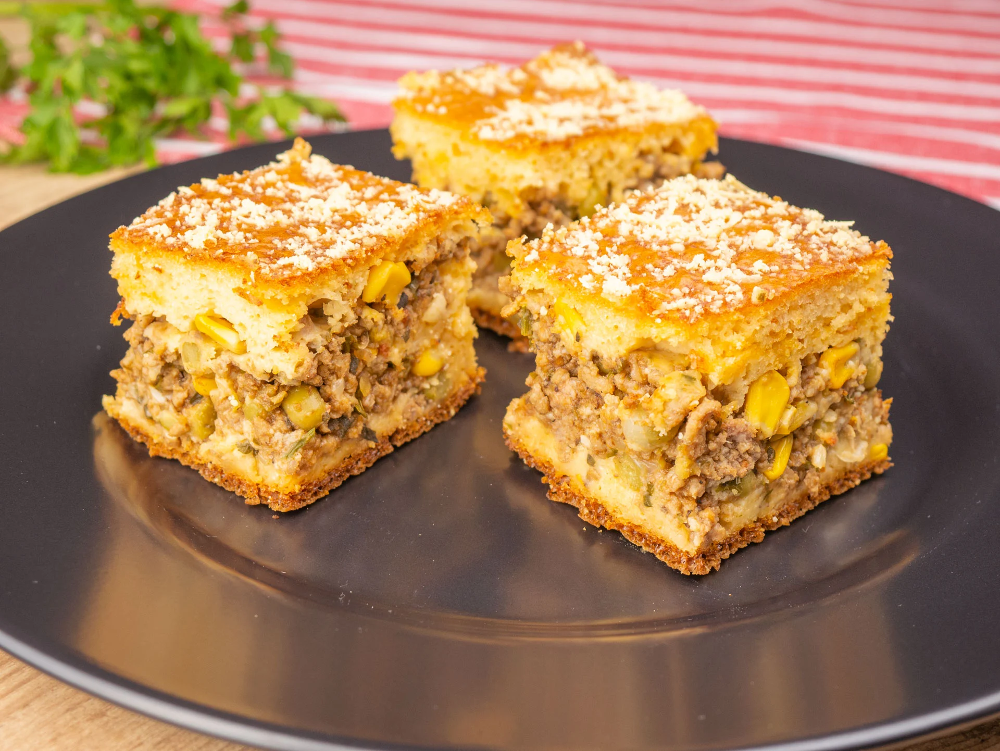

farinha de trigo 12 colheres de farinha de trigo óleo 1 copo de óleo ovo 3 ovos inteiros sal sal a gosto leite 2 copos de leite fermento 1 colher de fermento queijo mussarela ralado 100 g de mussarela ralada (opcional)
1 Bata todos os ingredientes no liquidificador. 2 Depois coloque a metade da massa em uma forma untada e coloque o recheio. 3 Depois coloque o resto da massa. 4 Leve para assar até ficar dourado. 5 Recheio a gosto (ex frango, sardinha, etc).
